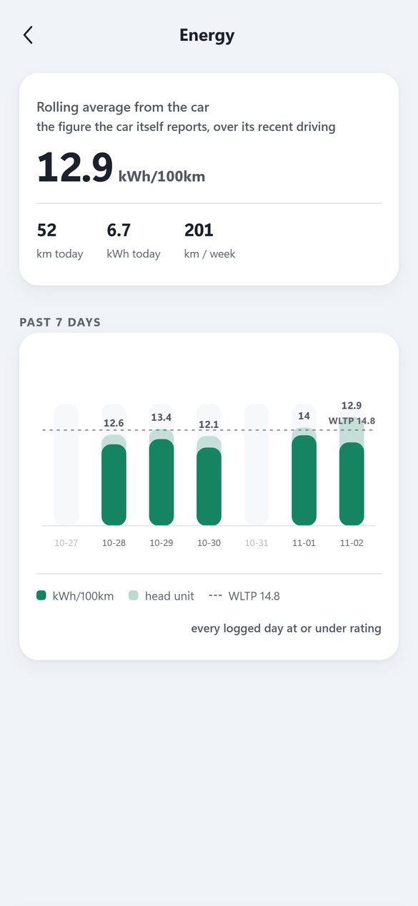
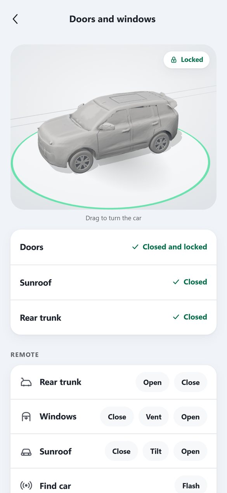

Open-source CarLinko dashboard
A better dashboard for your Jaecoo, Omoda or Chery
Everything the CarLinko app doesn't show: trips, energy use, charging cost, tyres and remote control. It reads your own CarLinko account and keeps the history the app throws away. Runs on your PC or an old Android phone.
- Jaecoo
- Omoda
- Chery
- Exeed
Free and MIT-licensed. Not affiliated with Jaecoo, Omoda, Chery or CarLinko.


What the CarLinko app doesn't show you
The app shows the car right now and little else. OpenLinko logs every update the car sends to its own cloud, so the numbers add up over days and months.
-
Real energy use
kWh/100 km per day, net of regen, next to the figure on the head unit and the WLTP rating.
-
Charging sessions and cost
Every session with kWh in, power curve and cost. On the reference car the cost matches the charger's receipts to 99.6 to 99.9%.
-
Trips and a driving calendar
Distance, energy and charging cost for every day, with trips detected from the odometer.
-
Remote control
Lock, A/C with temperature, windows, tailgate and find car, sent the way the official app sends them. Cloud only, no Bluetooth.
-
Tyres, 12 V and battery health
Tyre pressures on cars with direct TPMS, the 12 V battery voltage, and charge habits for LFP packs.
-
Head-unit add-on
Climate Gesture: change the fan and temperature by swiping on the J5's screen. Installed from the dashboard.




Supported cars
Confirmed by owners on four cars, three brands and four countries. The telemetry layout was identical on all of them, so it looks like a CarLinko platform layout, not a per-model one. Other Chery Group cars on the CarLinko app very likely work.
| Car | Type | Country | Status |
|---|---|---|---|
| Jaecoo J5 EV | Electric | Indonesia | Reference car, full |
| Omoda E5 | Electric | Uruguay | Confirmed |
| Chery Tiggo 7 PHEV / Tiggo 7 CSH | Plug-in hybrid | Malaysia | Confirmed |
| Chery Tiggo 8 PHEV | Plug-in hybrid | South Africa | Confirmed |
| Other Jaecoo, Omoda, Chery or Exeed on CarLinko | Any | Any | Likely. Add your car |
Run it on something you already own
It needs one machine that stays on to log the car. Your phone, Android or iPhone, then opens it in the browser and can add it to the home screen.
Windows PC
Download the repo, double-click start.bat. It installs what it needs and opens the dashboard.
start.bat
Old Android phone new
Install Termux and Termux:Boot from F-Droid, leave the phone on the charger. Starts again after a reboot.
pkg install -y git git clone https://github.com/GodrezJr2/openlinko ~/openlinko bash ~/openlinko/tools/termux-setup.sh
Linux, Raspberry Pi or VPS
One script sets up the services, with optional Tailscale so you can open it from anywhere without exposing it.
git clone https://github.com/GodrezJr2/openlinko cd openlinko && ./tools/install.sh --tailscale
Docker and Home Assistant (REST) setups are in the README.
Your account, your machine
There is no OpenLinko cloud. The dashboard signs in to your own CarLinko account from your own machine and keeps the data there.
- Your password, token, VIN and plate stay in a local file that is never committed.
- One install per owner. It is not a hosted service and never stores anyone else's account.
- Login retries are rate-limited so a wrong password can't hammer your account.
- CarLinko allows one session per account, so a second account linked to your car keeps your phone app signed in.
Questions
Is there a dashboard for my Jaecoo J5 EV?
Yes. OpenLinko was built on a Jaecoo J5 EV. It reads the same data the CarLinko app shows and keeps the history: trips, energy use net of regen, charging sessions with cost, tyres and 12 V health.
Does it work with Omoda, Chery Tiggo or Exeed?
It is confirmed on an Omoda E5, a Chery Tiggo 7 PHEV and a Chery Tiggo 8 PHEV as well as the J5. Other Chery Group cars on the CarLinko app very likely work. If yours isn't listed, the dashboard has a Report my car page that copies a redacted report for an Add my car issue.
Is it an official CarLinko app?
No. It is an independent open-source project, not affiliated with Jaecoo, Omoda, Chery or CarLinko. It talks to the same cloud the official app uses, with your own login.
Do I need a server?
You need one thing that stays on: a Windows PC, a Raspberry Pi, a small VPS, or a spare Android phone on the charger. The phone you carry just opens it in the browser.
Does it work on iPhone?
Yes, as the screen you look at: open it in Safari and add it to the home screen. iOS can't run the always-on part, so that runs on a PC, server or spare Android phone.
Does it work with Home Assistant?
Yes, through its REST API, with a ready-made configuration in the docs. There are also separate Home Assistant integrations for CarLinko cars listed in the README.
How much does it cost?
Nothing. It is MIT-licensed open source and runs on hardware you already have.